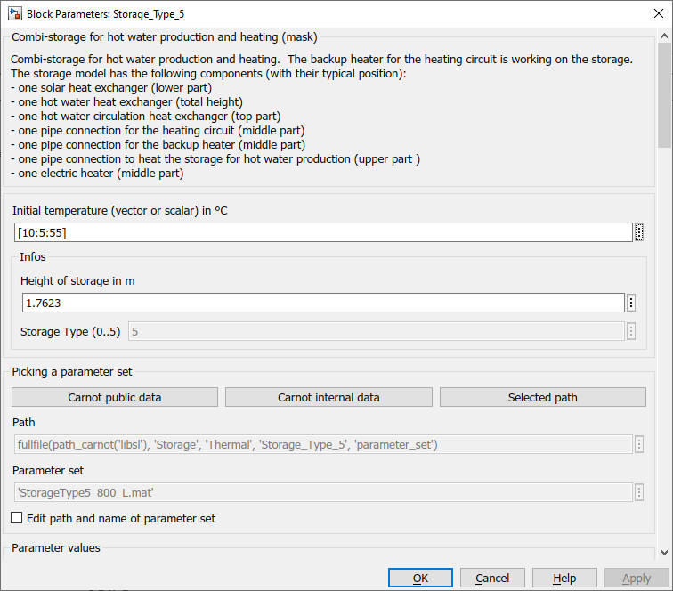
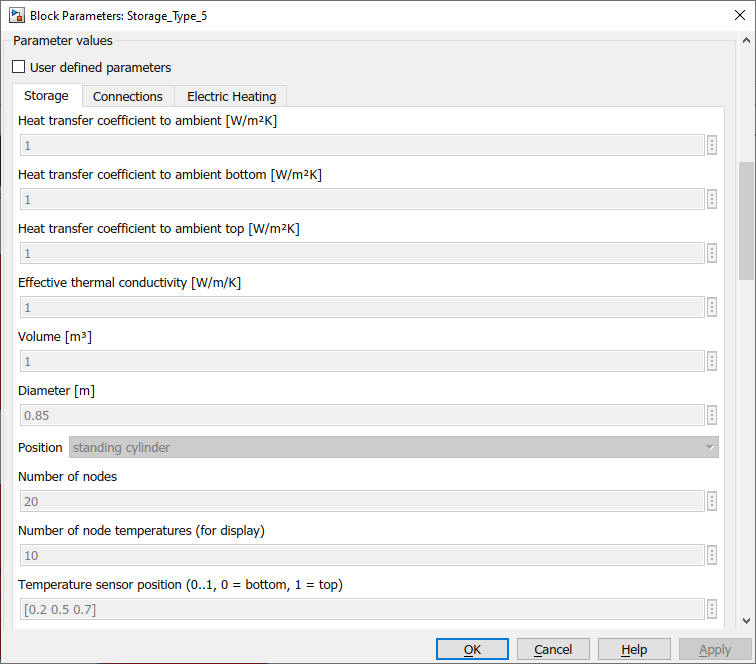
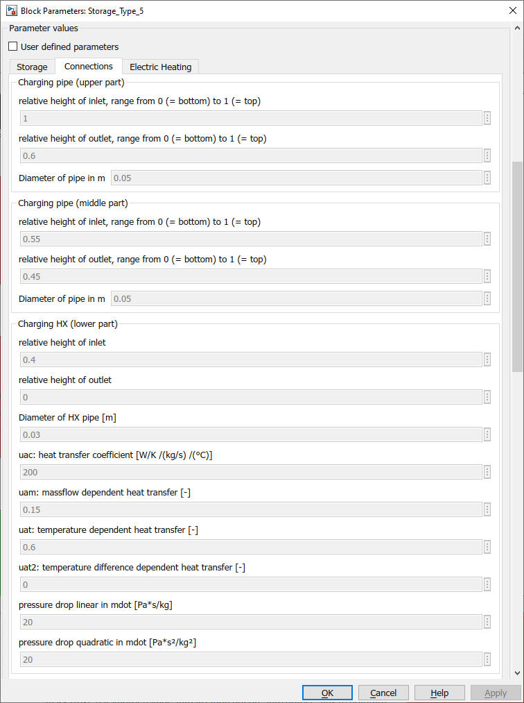
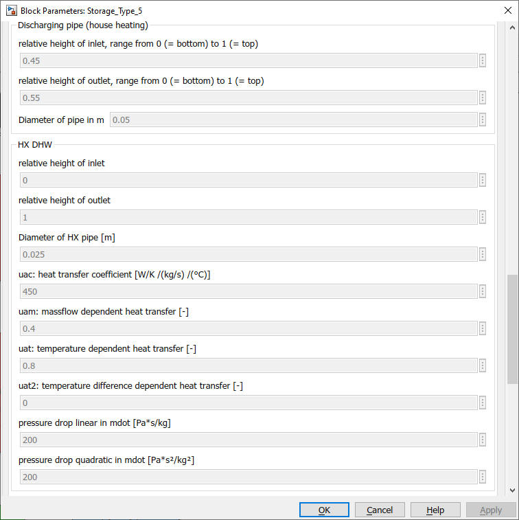
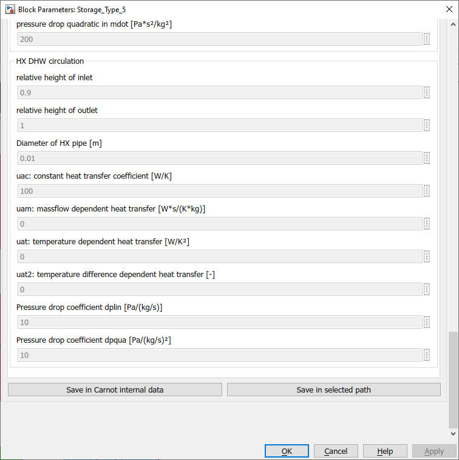
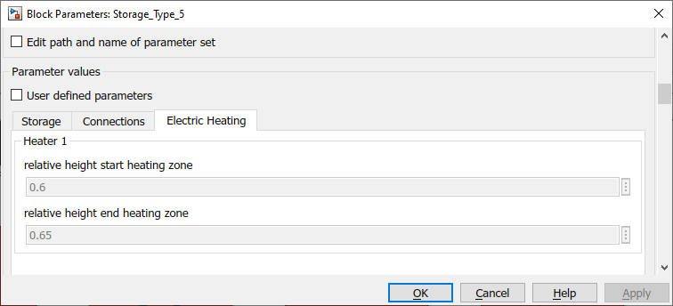

Storage_Type_5
Path: CARNOT/Storage/Thermal
Purpose:
Combi-Storage with two immersed heat exchangers, four pipe connections
and an electric heater.
Description:
Store with two immersed heat exchangers according to the
EN12977 model.
Typical application: Combi storage for solar assisted heating systems,
using the middle zone of the buffer for the auxilliary heater.
The model uses the multiport storage model, see
Storage_TypeN for details.
Input:
| Tamb | : | ambient temperature in °C (for thermal losses) |
| THB_dhw | : | Thermo-Hydraulic Bus of the cold water inlet to the dhw heat exchanger |
| THB_chg_up | : | Thermo-Hydraulic Bus pipe inlet to charge the upper part of the storage (DHW zone) |
| THB_dis_mid | : | Thermo-Hydraulic Bus pipe inlet to discharge the middle part of the storage (heating system zone) |
| THB_chg_mid | : | Thermo-Hydraulic Bus pipe inlet to charge the middle part of the storage (heating system zone) |
| THB_hx_low | : | Thermo-Hydraulic Bus inlet of the lower (solar) heat exchanger |
| THB_circ | : | Thermo-Hydraulic Bus of circulation return |
| Pel | : | power of the electric heater in W |
Output:
| Sdat | : | Storage data bus |
| Tsensors | : | value of temperature sensors in °C |
| THBdhw | : | Thermo-Hydraulic Bus of the hot water outlet of the dhw heat exchanger |
| THBchg_up | : | Thermo-Hydraulic Bus pipe outlet of the pipe connection to charge the upper part of the store (dhw zone) |
| THBdis_mid | : | Thermo-Hydraulic Bus pipe outlet to discharge the middle part of the storage (heating system zone) |
| THBchg_mid | : | Thermo-Hydraulic Bus pipe outlet of charging the middle part of the storage (heating system zone) |
| THBhx_low | : | Thermo-Hydraulic Bus outlet of the lower (solar) heat exchanger |
| THBcirc | : | Thermo-Hydraulic Bus of circulation outlet |
Parameters and Dialog Box:






You may directly choose predefined parameter sets.
For details see chapter
2.2.1 Choosing parameter sets for configurated models
Examples:
Open the example explorer from the Matlab command window
ExampleBrowser
or load the examples via the CARNOT library.
Characteristics:
| Direct Feedthrough | : | Yes |
| Sample Time | : | Inherited from driving block |
| Vectorized | : | No |